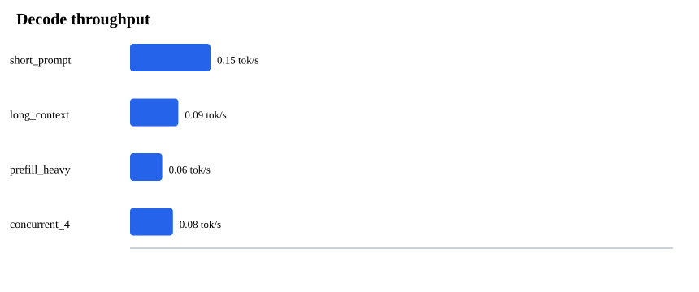
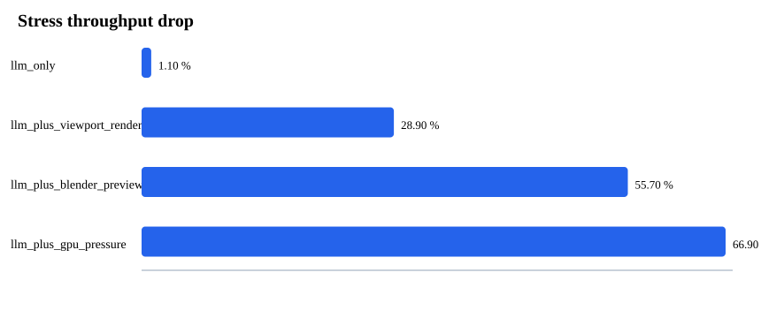

local-llm-lab report
A transparent estimate of local model fit, throughput, and stress behavior.
custom-600b on Mock Apple Silicon Max-class 128GB
Backend llama.cpp · quant Q4_K_M · context 32768
Riskextreme
Weights325.44 GiB
KV cache32.0 GiB
Runtime376.84 GiB
Available110.0 GiB
Margin-266.84 GiB
Decode mid0.28 tok/s
Confidencedemo


Benchmark
| Scenario | Decode tok/s | Prefill tok/s | P95 latency s | Peak GiB |
|---|---|---|---|---|
| short_prompt | 0.15 | 1.45 | 1292.83 | 378.96 |
| long_context | 0.09 | 0.72 | 18534.21 | 363.72 |
| prefill_heavy | 0.06 | 0.75 | 71170.62 | 363.05 |
| concurrent_4 | 0.08 | 0.98 | 4736.42 | 374.37 |
Stress Simulation
| Scenario | Drop % | Pressure | Stability |
|---|---|---|---|
| llm_only | 1.1 | 2.0 | unstable |
| llm_plus_viewport_render | 28.9 | 2.0 | unstable |
| llm_plus_blender_preview | 55.7 | 2.0 | unstable |
| llm_plus_gpu_pressure | 66.9 | 2.0 | unstable |
Downgrade Options
- No supported quantization fits safely at this context on this hardware.
- Consider remote inference, hybrid/offloaded inference, or a smaller distilled model.
- For 600B+ models, avoid local-only deployment unless you have measured headroom.
Warnings
- Model metadata confidence is low; override layers/heads/KV heads/head dim if known.
- Illustrative fixture for demos; not a measured machine.
- Estimated runtime exceeds available runtime memory by 267 GiB.
- Long context can dominate KV cache and prefill time.
Markdown Export
# local-llm-lab Report ## Verdict - Verdict: **does-not-fit** - Risk level: **extreme** - Confidence: **demo** - Recommended backend: `llama.cpp` - Recommended quantization: `no-safe-local-quant` ## Plan Inputs - Model: `custom-600b` (600.0B) - Hardware: `Mock Apple Silicon Max-class 128GB` - Context: `32768` tokens - Concurrency: `1` ## Memory Estimate | Metric | GiB | | --- | ---: | | weights gib | 325.44 | | kv cache gib | 32.0 | | backend overhead gib | 13.39 | | activation gib | 6.01 | | runtime required gib | 376.84 | | available runtime gib | 110.0 | | margin gib | -266.84 | ## Benchmark | Scenario | Decode tok/s | P95 latency s | Peak GiB | | --- | ---: | ---: | ---: | | short_prompt | 0.15 | 1292.83 | 378.96 | | long_context | 0.09 | 18534.21 | 363.72 | | prefill_heavy | 0.06 | 71170.62 | 363.05 | | concurrent_4 | 0.08 | 4736.42 | 374.37 | ## Stress Simulation | Scenario | Drop % | Pressure | Stability | | --- | ---: | ---: | --- | | llm_only | 1.1 | 2.0 | unstable | | llm_plus_viewport_render | 28.9 | 2.0 | unstable | | llm_plus_blender_preview | 55.7 | 2.0 | unstable | | llm_plus_gpu_pressure | 66.9 | 2.0 | unstable | ## Warnings - Model metadata confidence is low; override layers/heads/KV heads/head dim if known. - Illustrative fixture for demos; not a measured machine. - Estimated runtime exceeds available runtime memory by 267 GiB. - Long context can dominate KV cache and prefill time. ## Downgrade Options - No supported quantization fits safely at this context on this hardware. - Consider remote inference, hybrid/offloaded inference, or a smaller distilled model. - For 600B+ models, avoid local-only deployment unless you have measured headroom.